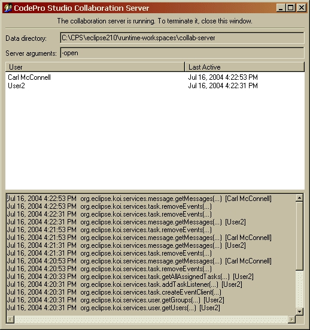

Collaboration ServerNot available in CodePro AnalytiX Rational EditionThe collaboration server is a machine accessible by collaboration clients over a network, and that is running an instance of the Eclipse platform (the eclipse.exe executable) that in turn is running the CodePro collaboration server application (using the -application argument) . The clients send requests to this machine, which the collaboration server application processes, returning the desired results to the clients. For brevity, in what follows the term "server" will often be used instead of the phrase "collaboration server application" except where that would cause confusion. System RequirementsThe collaboration server will comfortably support 25 simultaneous users on a machine with the following characteristics:
Larger user populations may require a correspondingly more powerful machine. Supporting more simultaneously active users will tend to require more memory and higher processor speed. Supporting more user accounts will tend to require more disk capacity. InstallationA server installation consists of an Eclipse 2.1 installation and the server components:
These components are in the file CodeProCollaborationServer_for_Eclipse2.1.zip. Note that the collaboration server can communicate with clients using any version of Eclipse including 3.0 and 3.1. If the Eclipse installation will only be used to execute the server, then a number of Eclipse plug-ins are not needed (the JDT plug-ins, for example). The file CodeProCollaborationServer_complete.zip contains such a stripped-down Eclipse 2.1 installation together with the server components. Thus, it is a complete server installation. To install the server, either
The eclipse\cpsws-server directory contains the files related to starting the server. ConfigurationThe .conf files in eclipse\cpsws-server\conf provide the server configuration information. They specify how to start Eclipse running the server. As described in this section, very little in these files should need to be changed to set up the server. However, sophisticated users may have reasons to alter them more extensively. See http://sourceforge.net/projects/wrapper for more information on them. The supplied server configuration assume a Java interpreter (java.exe) is on the system path. If that is not the case, set the value of the wrapper.java.command property to the location of the desired Java interpreter in the configuration files. ExecutionUsing the batch files in the eclipse\cpsws-server directory, the server can either be run manually, or set up as a Windows service to run automatically whenever the machine is booted. To run the server manually, execute the run.bat script. A console window will appear to indicate the server is running. Closing this window stops the server. The console shows the last time a user's workspace contacted the server. It also displays a rolling list of transactions which can give a good indication whether the server is operating properly or if a user's workspace is properly communicating with the server.  To install the server as a Windows service, execute the install.bat script. To start the server, either reboot the machine, or use the services administration utility (typically invoked by the Start button menu item Programs/Administrative Tools/Services). To uninstall the service, execute the uninstall.bat script, or use the services administration utility. When the server is running, a window is displayed. Closing this window stops the server, although the same result can be achieved using the services administration utility. It is often desirable to run the server in open enrollment mode. In this mode, the server allows people to create user and group accounts for themselves, thus easing the burden on the administrator, who would otherwise have to perform this task. On the client side, the collaboration preferences configuration wizard can take advantage of open enrollment mode by providing the opportunity for users to add themselves. To make the server run in open enrollment mode, simply use the "open" versions of the scripts named above: run-open.bat, install-open.bat, and uninstall-open.bat. Because there is no way to specify the port to use, having more than one server instance running on a machine at a time is not currently possible. This restriction will be lifted in future releases. MiscellaneousThe server keeps the database files and other items it uses in an Eclipse workspace, which by default is eclipse\cpsws-server-data. This is specified by the argument to the Eclipse -data option, which corresponds to the wrapper.app.parameter.5 property in the configuration files. Those wishing to run the collaboration server on non-Windows platforms such as Linux can use the basic.bat script as a model. It shows the basic Windows command line for starting the server. |